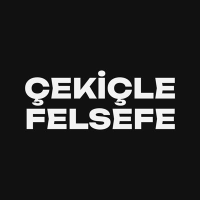

Psychologue d’orientation psychanalytique
Haktan Tay
Qu’y a-t-il derrière le discours ?
Écouter le sujet, c’est le trouver dans la parole.
Écoute analytique
Que dis-tu ?
Qu’est-ce que j’entends.
À propos
La parole fait
exister le sujet.
Je suis psychologue et chercheur d’orientation psychanalytique. Au centre de mon travail se trouvent les concepts de sujet, discours et désir. Je suis la manière dont ces trois concepts s’entrelacent dans le cadre théorique de Jacques Lacan, dans ma pratique clinique comme dans mes travaux de recherche.
Diplômé en psychologie de l’université de Yalova, j’ai effectué des stages cliniques d’orientation psychanalytique dans plusieurs institutions, auprès de différents cliniciens. Je suis la pratique lacanienne en Turquie comme sur la scène internationale.
“L’inconscient est structuré comme un langage.”
— Jacques Lacan, ÉcritsÇekiçle Felsefe est la revue dont je suis le rédacteur en chef ; j’écris par ailleurs sur la psychanalyse pour plusieurs publications. Je continue de présenter mes travaux sur la psychanalyse dans des congrès nationaux et internationaux.
“Toute parole appelle réponse.”
— Jacques Lacan, Écrits
Approche
Psychanalyse
lacanienne
La séance n’offre pas de solution — elle ouvre un espace. Dans la parole, le silence et les glissements de sens, le sujet suit la trace de son propre désir. L’écoute analytique prête l’oreille à ce qui se dit au-delà du discours.
Nœud
borroméen
Au fondement de la théorie de Lacan se trouvent trois anneaux : le Réel, le Symbolique et l’Imaginaire. Comme dans un nœud borroméen, ils se tiennent l’un l’autre — qu’un seul se rompe, et les autres se dénouent.
La pratique clinique est à l’écoute des ruptures dans ces trois dimensions. En accompagnant le discours du sujet, l’analyste reconnaît ce que l’ordre symbolique laisse au-dehors : les traces du réel.
Ce qui ne peut être symbolisé, le champ d’avant le langage. Trauma, symptômes qui se répètent, excitation débordante — le Réel s’infiltre par les trous du Symbolique. Le travail clinique cherche comment vivre avec ces fuites.
Le langage, la loi, le grand Autre. Le sujet naît dans l’ordre symbolique et glisse sans cesse le long de la chaîne signifiante. En suivant ce glissement, l’analyse du discours met au jour la structure du désir du sujet.
Le stade du miroir, le moi, la reconnaissance et la méconnaissance. La relation analytique est l’un des rares lieux où une sortie du piège de l’image devient possible — un moment où le sujet peut se voir autrement.
Processus
Comment je travaille
Nous parlons ensemble de vos attentes, de vos questions et de votre histoire. Cette séance est un temps d’évaluation et n’engage à rien.
La fréquence, la durée des séances et la manière de travailler sont convenues. Le cadre psychanalytique crée un espace où la parole du sujet peut se déployer librement.
Par l’association libre, nous découvrons les portes qui s’ouvrent sur l’inconscient. Chaque séance est singulière ; ce qui mène, ce n’est pas l’analysant, c’est la parole elle-même.
La psychanalyse ne vise pas des solutions immédiates, mais une transformation subjective durable. Une position nouvelle se trouve dans le discours ; ce processus prend du temps, mais il laisse une trace.
Parcours
Parcours
clinique & académique
Passation de tests psychologiques, entretien clinique, formulation de cas, évaluation psychopathologique.
Troubles neurodéveloppementaux, rééducation, passation de tests neuropsychologiques.
Organisation des activités de la commission et d’événements de formation continue.
Travaux académiques
Publications
Faites défiler
Conférences &
communications
Essais
Faites défiler
Lectures
choisies
Revue

Çekiçle
Felsefe
Une revue turque à la croisée de la philosophie, de la psychologie, de la sociologie, du cinéma, de la politique et de la littérature. Son nom signifie « Philosopher à coups de marteau » : inspirée du marteau de Nietzsche, Çekiçle Felsefe vise à démolir la pensée pour la reconstruire.
cekiclefelsefe.com“Philosopher, c’est saper les concepts et mettre au jour les présupposés qu’ils recèlent.”
Le Stade du Miroir
Ton reflet bouge avec toi
mais il n’est jamais tout à fait toi.
Essaie les deux côtés de la limite
Essai sur le stade du miroir →Récit du discours
La naissance du sujet
- 1 D’abord, un point — un être corporel pas encore tombé dans le langage.
- 2 Le langage l’enveloppe — le cercle du signifiant se referme.
- 3 La barre tombe — le sujet est divisé.
- 4 Voici $ — l’être parlant, fendu par l’inconscient.
Notation lacanienne
Mathèmes
Pour réduire le cœur de sa théorie à des formules, Lacan a recours à des mathèmes algébriques. Ceux qui suivent forment l’ossature de la clinique et de l’écriture. Essai sur les formules de la sexuation →
Le fantasme — la forme fondamentale du rapport que le sujet divisé noue avec objet a.
Un signifiant représente le sujet pour un autre signifiant. Le sens glisse le long de la chaîne.
Le grand Autre n’est pas tout ; il porte un manque dans sa propre batterie signifiante.
L’objet cause du désir — un vide glissant, jamais tout à fait saisissable.
Le sujet entré dans le langage, divisé — il vit dans la fente entre ce qu’il dit et ce qu’il veut dire.
Le signifiant du manque ; ce qui détermine le désir dans l’ordre symbolique — non un organe, mais une fonction.
Lacan · Séminaire XVII
Les quatre discours
Dans sa théorie des quatre discours, Lacan fait tourner les quatre mêmes mathèmes — $, S1, S2, a — à travers quatre places. Qui est l’agent, qui l’autre, quelle est la vérité, qu’est-ce qui est produit ? Cliquez pour faire tourner la roue.
Essai sur les quatre discours →
Le signifiant maître (S1) commande au savoir (S2) ; le sujet ($) se cache comme vérité, et il reste objet a (plus-de-jouir). Le discours de l’histoire.
Lacan · Écrits
Le Graphe du Désir
“Subversion du sujet” — le schéma développé dans ce texte : le parcours du sujet dans le discours, la manière dont la chaîne signifiante le coupe, et dont $surgit. Survolez un nœud.
Le sujet “brut”, pas encore tombé dans le langage, pas encore coupé par le signifiant. Le point de départ fictif de Lacan — non un moment réel, mais une position supposée rétroactivement.
Cliquez sur un nœud · faites glisser
Essai sur le grand Autre et le graphe du désir →Petit glossaire
Concepts
De brèves définitions des concepts lacaniens et freudiens employés sur le site. Cliquez pour ouvrir.
L’inconscientInconscient
Pour Lacan, l’inconscient est structuré comme un langage. Il n’est pas un simple réservoir du refoulé ; il opère dans la coupure entre ce qui se dit et ce qui ne peut se dire. Lire l’essai →
$Sujet divisé
L’être entré dans le langage, divisé. Il vit dans la fente entre ce qu’il dit et ce qu’il veut dire ; c’est là précisément que parle l’inconscient. Lire l’essai →
Le RéelLe Réel
Ce qui ne peut être symbolisé ni dit. Le lieu par où s’infiltrent le trauma, l’angoisse et le symptôme qui se répète. Lire l’essai →
Le SymboliqueLe Symbolique
Le langage, la loi, le grand Autre. L’ordre où naît le sujet et où il prend place dans une chaîne de significations glissantes. Lire l’essai →
L’ImaginaireL’Imaginaire
Le stade du miroir, le moi, reconnaissance et méconnaissance. L’ordre imaginaire : le champ illusoire où apparaît le “je”. Lire l’essai →
Objet petit aObjet du désir
L’objet cause qui met le désir en mouvement et ne se laisse jamais saisir tout à fait. Il tourne autour d’un manque. Lire l’essai →
Le DésirDésir
Ce qui reste entre la demande et le besoin. Il ne s’éteint pas dans une satisfaction ; il va toujours vers le désir de l’Autre. Lire l’essai →
Le Grand Autre (A)Le grand Autre
La pierre angulaire du langage et de la loi ; l’ordre symbolique qui constitue le sujet lorsqu’il parle. Non une personne, mais un lieu. Lire l’essai →
JouissanceAu-delà du plaisir
Une satisfaction qui dépasse la limite du plaisir et se mêle à la douleur. Chez Lacan, le lien entre le symptôme et le sujet. Lire l’essai →
Le Stade du MiroirLe stade du miroir
Le moment où l’enfant de six à dix-huit mois reconnaît son image dans le miroir comme “je”. Le moi se fonde dès l’origine sur une méconnaissance. Lire l’essai →
Le Nom-du-PèreLe Nom-du-Père
La fonction symbolique qui borne le désir de la mère ; non une personne, mais le signifiant qui noue le sujet au langage et à la loi. Lire l’essai →
Le PhallusPhallus
Non un organe, mais le signifiant du manque et du désir. Personne ne l’a ; chacun se situe par rapport à lui. Lire l’essai →
Le TransfertLe transfert
L’amour que l’analysant adresse au savoir qu’il suppose à l’analyste ; le moteur de l’analyse. Lire l’essai →
Le SymptômeLe symptôme
Le retour déguisé du refoulé ; à la fois un message et une forme de satisfaction. Lire l’essai →
Rendez-vous
Prêt à faire
un premier pas ?
Le voyage psychanalytique commence par une question. Je suis là pour la trouver avec vous.
CommencerContact
Commençons
une conversation.
Écrivez-moi pour toute question sur les séances psychanalytiques, la supervision ou une collaboration universitaire. La première séance est gratuite.